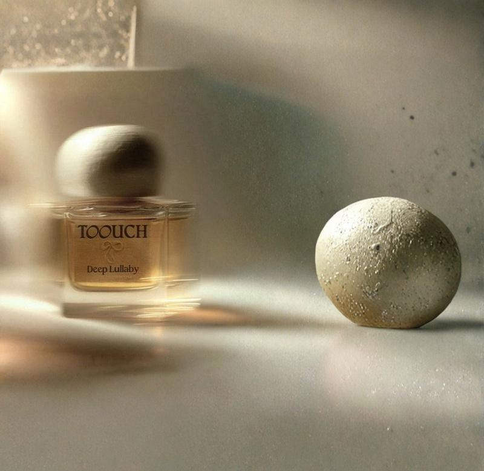
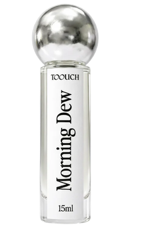

Giữa nhịp sống hiện đại ngày càng vội vã, khi mùi hương cũng dần bị thay thế bởi những thứ công nghiệp, vô danh, ký ức về một vùng đất, một mùa cũ đôi khi bị thu hẹp trong vài bức ảnh lưu trữ vội vàng trên điện thoại. Toouch chọn khoảnh khắc giao mùa này để nhắc chúng ta sống chậm lại, cảm nhận sâu hơn, và để mùi hương chạm vào tâm trí. Thông điệp ấy được hiện thực hóa bằng những hành động tưởng chừng rất đơn giản nhưng lại gần gũi - xóa nhòa khoảng cách giữa hương thơm hiện đại và bản sắc Việt.
Có một khoảng lặng trong năm mà người ta ít gọi tên - khi hè đã cũ mà thu chưa tới, khi lòng người đã rục rịch đổi mùa trước cả khi đất trời kịp đổi màu. Tháng Tám còn vương nắng, nhưng gió đã khẽ se. Tháng Chín, phố chưa vàng lá, mà đã thoảng mùi hoa nhài, mùi cốm xanh gói lá sen.
Đó là lúc nước Việt mặc lên mình tấm áo chuyển mùa đẹp nhất - không ồn ào như mùa hè, không tịch liêu như mùa đông, mà là một khoảng giao thời dịu dàng, nơi ký ức và hiện tại chạm vào nhau. Toouch chọn chính khoảnh khắc ấy để cất lời, vì tin rằng một thương hiệu chạm được vào lòng người nhất là khi nó xuất hiện đúng lúc trái tim người ta đang mềm nhất.

Hương cà phê đậm và quế ấm gợi buổi sáng Sài Gòn, dịu lại bởi hạnh nhân, cacao, hồng Thổ Nhĩ Kỳ. Cuối cùng đọng lại da mềm, hổ phách, vani, praline – ấm áp, gần gũi, không cần định nghĩa dịp dùng.
Vải và đào tươi mở đầu ngọt nhẹ, chuyển sang sữa gạo béo mịn gợi miền Tây sông nước yên ả. Khép lại bằng vani, diên vĩ, xạ hương trắng – êm dịu như một ký ức chậm rãi, không cần thời điểm đặc biệt.
Táo và bưởi chùm mát lạnh, rực rỡ mở đầu; neroli cùng muối biển gợi làn gió biển khơi. Đọng lại nốt aquatic và xạ hương ánh kim – sạch, thoáng, tự do, dành cho ai muốn buông lỏng theo nhịp riêng.
Lê và hoa mộc dịu dàng mở đầu, hòa cùng trà xanh, hoa trà, linh lan, hoa nhài gợi phố cổ Hà Nội sớm mai. Cỏ hương bài, xạ hương cashmere, gỗ hồng khép lại bình yên, tinh tế, lặng lẽ.
Thông và lavender cùng mojito mở ra cảm giác cao nguyên se lạnh, tiếp nối bằng dâu rừng, hồng dại, mimosa ấm áp. Lá thuốc, gỗ cháy, đàn hương ở lại như bản ru êm của một ngày dài.